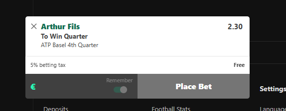

The free bet, Basel quarter 4
Swiss Indoors Basel · 29 October 2026
This is the one I am actually playing, and the whole reasoning is on this page. Read it to the end. The conditions are at the bottom, and they matter more than the pick.
Not Fils to win the tournament. Just his quarter. At 2.30 the market is saying this happens 43 times out of 100.
What you are actually buying
Quarter 4 is four players. Fils, Alex Michelsen, Taylor Fritz and Denis Shapovalov. To win the quarter Fils has to beat Michelsen today, and then whoever comes out of Fritz against Shapovalov.
So it is two matches, not one. That is why the price is 2.30 and not 1.60. The question is whether two wins against those three names is really a 43 percent proposition.
He has already beaten Michelsen this month
Ten days ago in the Brussels quarter-final, indoors, on the same kind of court. Fils won it 6-4 and 7-6, and the tiebreak went to 14-12. So he knows exactly how that match plays, and he knows it is close.
Michelsen is 34 in the world and Fils is 8. The ranking gap is real, but the last meeting says this is a tight match, not a comfortable one.
The Perricard match says the game is clean right now
Fils came through the first round against Giovanni Mpetshi Perricard 7-6, 7-5. Perricard served 21 aces in that match and still lost, because Fils did not give him a single free point from the back of the court.
He landed 62 percent of first serves and won 78 percent of those points, won 68 percent behind the second serve, and faced exactly one break point in the whole match. He saved it. That is a player whose timing is there.
The other half of the quarter
Fritz is the one everybody will assume comes through, and he is the 6 seed. But he played the Lyon final on Sunday, lost it to Musetti 6-3 6-4, and arrived here with no rest at all. In the first round he needed a tiebreak to get past Rinky Hijikata.
Fils and Fritz have met once. Tokyo 2024, Fils won it 6-4, 3-6, 6-3.
Shapovalov is the other possibility and Fils has never played him. That is a genuine unknown, and I am not going to pretend otherwise.
Where it goes wrong
Fils is on short rest too. He played Brussels to the semi-final last week and lost it to Struff from a set up, 6-4, 6-7, 7-6. Two long weeks back to back is how young players run out of legs in October.
And the Michelsen match is not a formality. A 14-12 tiebreak ten days ago is a coin flip with a result attached. If that one goes the other way today, the quarter is gone before the interesting part starts.
That is the honest risk. Not that Fils is the wrong player, but that he has to win two matches in four days on tired legs.
The conditions
This is a free bet, so there are rules attached. If you do not follow them, do not count the result against the record.
- Only at 2.30 or better. If your book has moved it below 2.20, the edge is gone and this is no longer the bet.
- One unit. Not two because it feels good, not half because you are nervous. The number only means something if it is the same every time.
- It has to be on before Fils plays Michelsen at 14:00 CET. After that the price is a different bet.
- To win the quarter, outright. Not to win the tournament, not a match handicap, not a build-up.
- Read the risk section above before you place it. If the short-rest argument bothers you, skip this one. That is a perfectly good answer.

The slip as it sits. 2.30, to win the quarter.The next one
I put one of these out when the model finds something worth a whole page. No daily slate, no fifteen picks a weekend. The next one goes out the same way this one did, straight into the DMs.
Every pick, with the reasoning behind it. beacons.ai/wavehubtennis